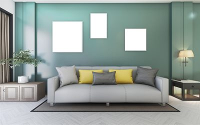
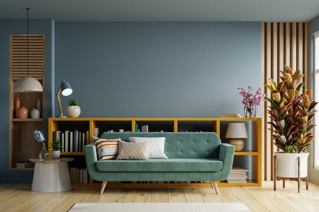
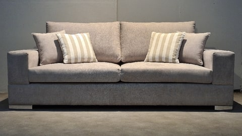
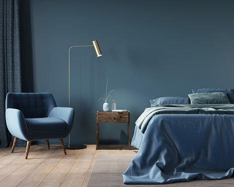
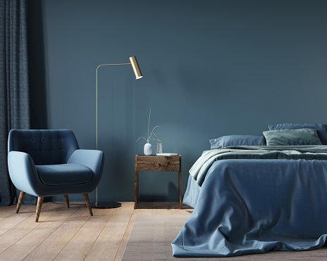
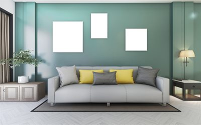
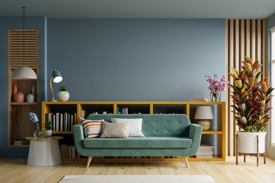
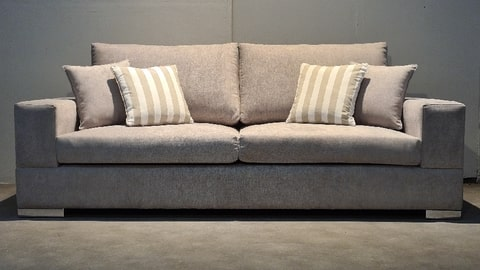
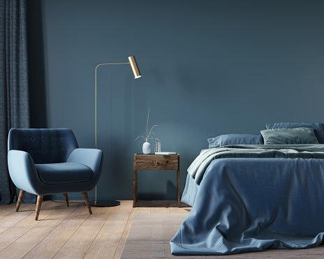

TRABAJOS REALIZADOS
Tapicería Bayerque posee un amplio catálogo de telas para tapicería para poder brindar las mejores
opciones a
la hora de elegir sus re-tapizados. Todas nuestras telas son especiales para sillas y sillones, con
grabados y estampados que le da dan agregado estático y decorativo. Si usted desea alguna tela por
fuera
de nuestro catálogo, puede solicitarnos que trabajemos sobre las mismas.




 



Tapicería Bayerque posee un amplio catálogo de telas para tapicería para poder brindar las mejores opciones a la hora de elegir sus re-tapizados. Todas nuestras telas son especiales para sillas y sillones, con grabados y estampados que le da dan agregado estático y decorativo. Si usted desea alguna tela por fuera de nuestro catálogo, puede solicitarnos que trabajemos sobre las mismas.



